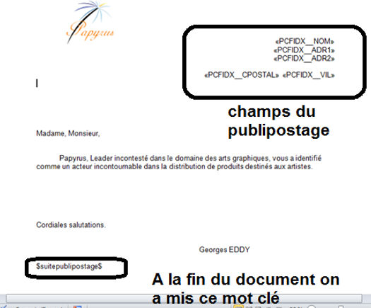

procedure SurchargeDebut
beginp
Office_MailingNoExecuteEnd ;on autorise à modifier le document final
Office_SetModePublipostageWithOpenXML ;passage en mode OpenXml
endp
procedure SurchargeFin
1 fichier 260
1 trouver x = 0
1 err x = 0
beginp
;récupère le nom du fichier temporaire du document final du publipostage
fichier = Office_MailingGetFile
if fichier <> " " ;s’il y a eu un problème durant le publipostage,
;la fonction renvoie un nom de fichier à espace
OpenXml_Begin ;ouverture du module OpenXml
err = OpenXmlWord_OpenFile (left(fichier)) ;chargement du fichier .docx
if err = 0
;on boucle sur le mot clé $suitepublipostage$ : le publipostage
;peut le renvoyer plusieurs fois avec des champs différents
Do
;cherche le mot $suitepublipostage$, le remplace par "" (rien)
;et crée un point d’ancrage juste après le paragraphe qui
;contenait le mot clé $suitepublipostage$
trouver = OpenXmlWord_Replace ("$suitepublipostage$","",true)
while trouver = 1
;on a trouvé $suitepublipostage$ et OpenXml à créé l'ancrage
;on peut alors demander à OpenXml de remplacer ce point d’ancrage
;par le contenu d’un fichier rtf
;un nouveau point d’ancrage est recréé juste après le texte rtf
OpenXmlWord_InsertFile("c:\divalto\ademortf.rtf")
;on demande maintenant à OpenXml de remplacer ce 2ème point d’ancrage
;par le contenu d’une image
;un nouveau point d’ancrage est créé après l'image
OpenXmlWord_InsertFile("c:\divalto\acrylique1.jpg")
;on poursuit avec le contenu d’un fichier html
;attention, il faut un fichier html "simple", et s’il
;contient des images, le code de ces images doit être dans la page
;html (on ne peut pas avoir une image de type chemin Windows
;ni de lien http: ...)
;un nouveau point d’ancrage est recréé après le texte html
OpenXmlWord_InsertFile("C:\divalto\amapi_modehtml.htm")
;idem avec un autre fichier .docx
OpenXmlWord_InsertFile("c:\divalto\agrmservices.docx")
;sinon, on peut aussi utiliser le point d’encrage pour créer
;un simple paragraphe et y placer du texte
OpenXmlWord_CreateParagraph(0,0)
;le caractère "|" sera remplacé par un saut de ligne
OpenXmlWord_InsertText("Hello|sur|3 lignes");
wend
OpenXmlWord_CloseFile
endif
endif
Office_MailingEndNext
Office_SetDefaultModePublipostageWidthOpenXML ;retour au mode par défaut
Endp
procedure DemoPublipostage (preview)
1 preview n
beginp
SurchargeDebut ;avant de faire le publipostage, on indique qu’on veut intervenir
;sur le fichier .docx qui contient le résultat du publipostage
;la fonction de publipostage va alors s’arrêter avant le fin du
;publipostage général pour permettre d’intervenir sur le document final
ErreurOle = Office_Begin
if ErreurOle = 0
ErreurOle = Ouvre_DocMaitre(preview)
If ErreurOle = 0 ;document ouvert
Lignes_Data(1)
Lignes_Data(2)
Lignes_Data(3)
Office_MailingExecute (Champ_ListId,1,left(system.znomprog),"MessageOffice")
Office_MailingEnd ;dans ce mode, la fonction de publipostage ne finit pas
;totalement le traitement du fichier et rend la main
;pour que le programme diva puisse intervenir sur
;le document final avant de terminer la fonction de publipostage
SurchargeFin ;à la fin du publipostage, on met à jour le fichier et
;on redonne la main à la fonction de publipostage de yoffice
EndIf
Office_End
if Champ_ListId
ListDestroy(Champ_ListId)
endif
endif
endp
Document Word avant le publipostage :

Document Word après le publipostage :
Document Word après le 1er remplacement par OpenXml :